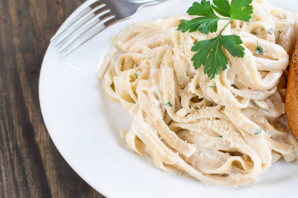

Fettuccini Alfredo

Description
Fettuccini Alfredo, a luxurious Italian pasta creation, seduces with its creamy allure. Silky fettuccini noodles intertwine gracefully with a velvety Alfredo sauce, born from the harmonious union of butter, heavy cream, and Parmesan cheese. A symphony of flavors emerges, as the sweet, nutty Parmesan melds with the indulgent richness of butter and cream. This dish is a canvas for personalization, accommodating grilled chicken, succulent shrimp, or vibrant roasted vegetables for added depth. Topped with a sprinkle of fresh parsley or a dash of cracked black pepper, Fettuccini Alfredo is a culinary masterpiece, inviting you to savor the essence of Italian comfort and sophistication in a single, decadent bite.
Ingredients
- 10 ounces fettuccini pasta
- 1/2 cup butter
- 5 cloves garlic, chopped
- 1 cup heavy cream
- 1 egg yolk
- 2 cups freshly grated Parmesan cheese
- 2 tablespoons dried parsley
Steps
- Bring a large pot of lightly salted water to a boil. Add pasta and cook for 8 to 10 minutes or until al dente; drain.
- Meanwhile, in a large skillet melt butter and add chopped garlic. Cook on low for about 5 minutes, stirring often to prevent garlic from burning.
- Pour about a 1/4 cup of heavy cream into a small bowl. Add egg yolk and beat together; set aside.
- Pour remaining cream into the skillet. Increase heat to medium-high. As cream starts to boil, mix rapidly using a whisk. Add egg mixture slowly to prevent curdling, whisking until well blended. Stir in 1 cup Parmesan cheese until combined.
- Add remaining Parmesan cheese and parsley; mix until smooth. Remove from heat and serve over cooked pasta.
Enjoy!